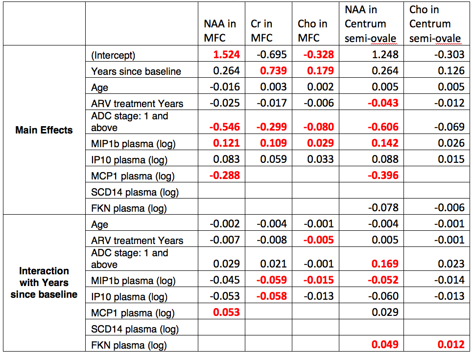

\( \def\RR{\bf R} \def\real{\mathbb{R}} \def\bold#1{\bf #1} \def\d{\mbox{Cord}} \def\hd{\widehat \mbox{Cord}} \DeclareMathOperator{\cov}{cov} \DeclareMathOperator{\var}{var} \DeclareMathOperator{\cor}{cor} \newcommand{\ac}[1]{\left\{#1\right\}} \DeclareMathOperator{\Ex}{\mathbb{E}} \DeclareMathOperator{\diag}{diag} \)


Recovered Gene Networks

SCIO prediction vs others

Slides at:
Network Modeling of HIV and Brain
Xi (Rossi) LUO
Department of Biostatistics
Center for Statistical Sciences
Computation in Brain and Mind
Brown Institute for Brain Science
Brown Data Science Initiative
The ABCD Research Group
May 19, 2017
Funding: NSF/DMS (BD2K) 1557467; NIH R01EB022911, P20GM103645, P01AA019072, P30AI042853
- Overview: machine learning, Bayesian, probability/matrix theory, optimization, large-scale computing
- Idea: integrate techniques from CS, Biology, Math, and Stat to solve some complex problems
Why Important for HIV and Neuroscience
- Big data
- genes, cytokines/chemokines, neuroimaging
- Complex data
- Multiple data domains, visits
- Comorbidities, behavior
- Big and complex
- Link big data with complex outcomes
Ex 1: Genes and HIV Brains
- Gene expression arrays on post-mortem brain tissues Borjabad et al, 2011
- Tens of thousands genes
- Outcome: controls, treated HAND, untreated HAND
- Data: publicly available from NIH GEO GSE28160
- R package also publicly available from CRAN
- Follow NIH's call for reproducible research
- Question: are there relationships between expressions and HIV treatment?
Method Comparision
- Massive testing
- T tests for each gene vs HAND treatment (Yes/No)
- Drawbacks: far from biology, no validation, sample size, multiple testing
- Network modeling
- Gaol: how all genes together as networks related to treatment
- Need computational and mathematical tools to find gene networks
- Black-box machine learning
- Feed genes into predictive models
- Test prediction performance on an independent sample
Results
Ex 2: HIV + Molecules + Imaging
- With ARCH investigators, R Cohen and others
- Data:
- Baseline covariates
- Many cytokine and chemokine markers
- Many imaging outcomes in multiple brain regions at multiple visits
- How (some) markers influence imaging (trends)?
Some combinations removed by an AI method
Ex 3: Predicting Diseases
- Other comorbidities: T2D or CVD
- Make these computational tools widely available
- Use for behavioral interventions?
Demo
Summary
- Network modeling
- Complex models for complex diseases
- New translational tools and technologies
- Much more to be done
- Thanks to CFAR and ARCH!
- Especially, my mentor Joe Hogan and many other colleagues